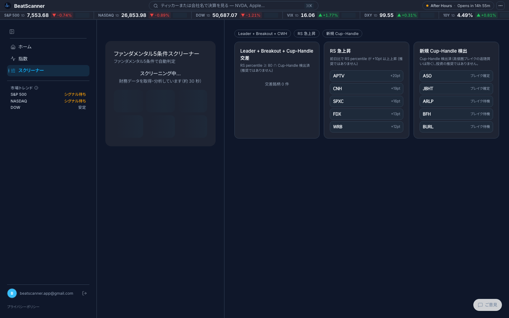
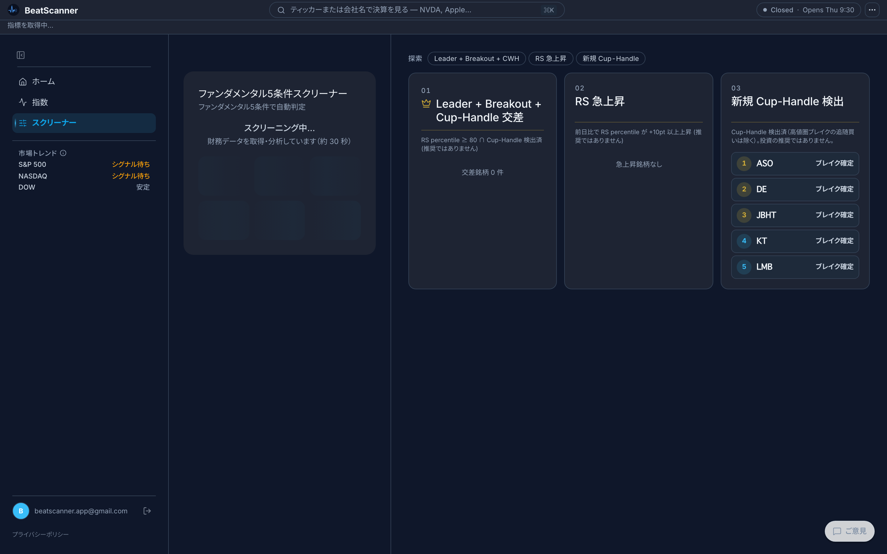
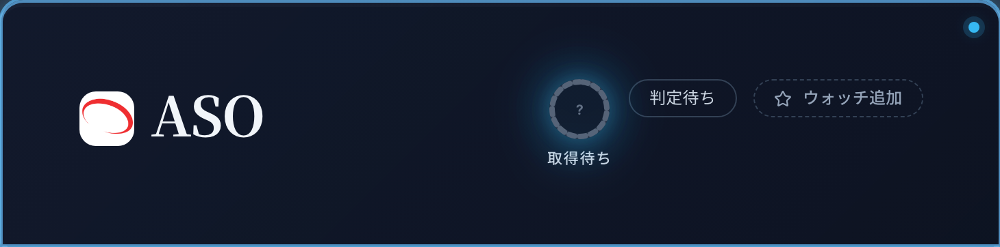
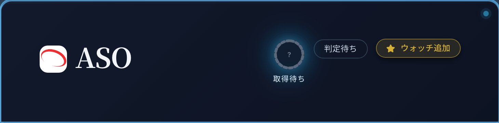
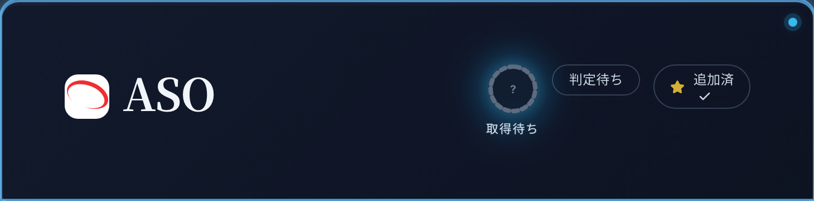
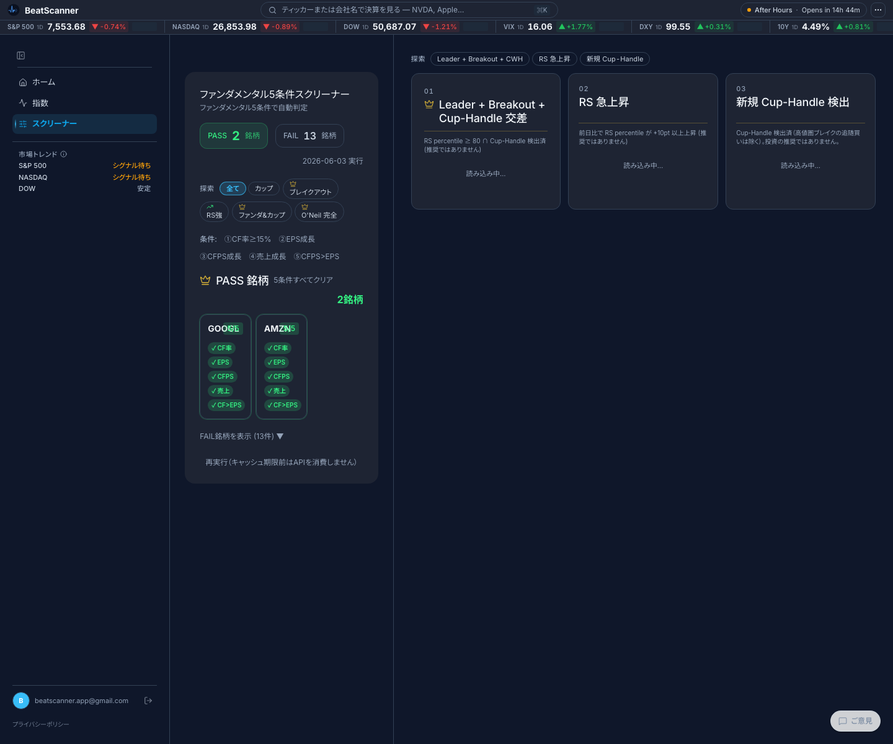
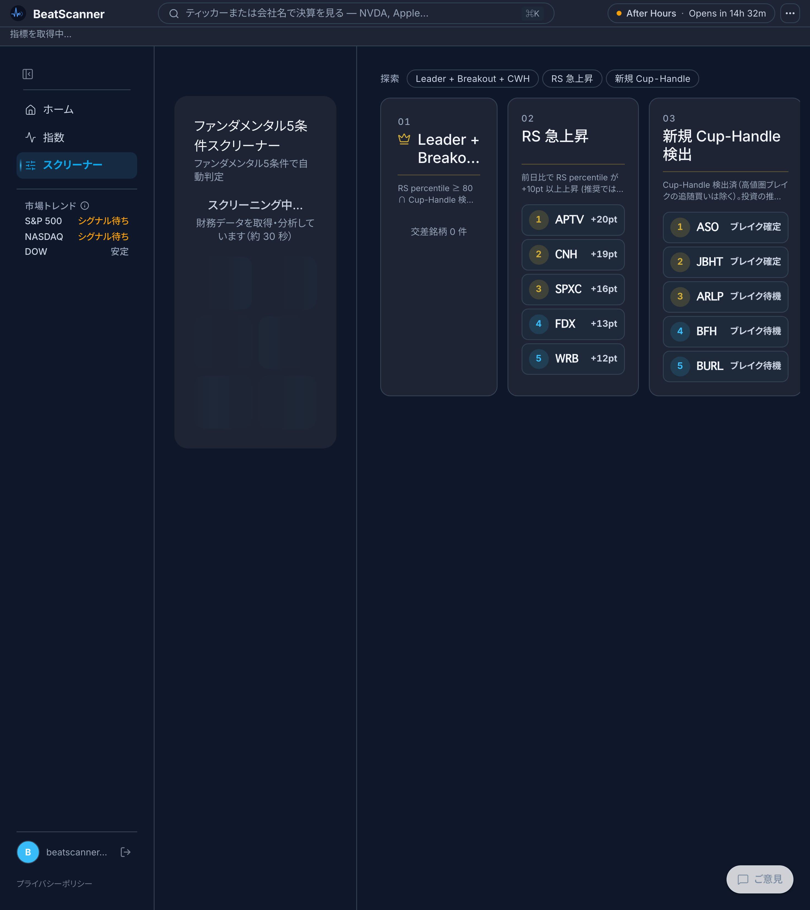

2026-06-04 / 本番 index-Dl1UqBKm.js / スマホ確認用（このページは noindex・あとで削除します）
真因は装飾不足ではなく 3つの階層欠落（全要素が同格 / 数値が脇役 / 入場演出ゼロ）。それを「見出しの格 + 数値主役化 + 入場の間」で解消しました。

AFTER（刷新）
見るポイント: 「探索」chip / 01-02-03 連番 + gold hairline / 18px見出し / 👑Crown（交差）/ ランクcircle（上位3=金）+ ticker太字 + 数値badge。
※今日のデータは 01交差・02RS急上昇 が0件、03のみ銘柄あり。全部埋まる日はもっと賑やかになります。
スマホでは触っても見えない hover の動きを再現。左から: 未追加 → hover → 追加済。緑は使わず、色変化はすべて gold。
① 未追加
② hover（★金点灯 + 浮上 + border金）
③ 追加済（★金点灯 + 「追加済」 + ✓）
左の「ファンダ5条件スクリーナー」の PASS 銘柄を「ご褒美」化。👑Crown + 18px見出し + 件数stat「2銘柄」。PASS=緑のリングは維持、FAIL は折りたたみ。

幅980pxを3分割すると各列140-186pxで窮屈。交差の長い見出しは2行+…で省略（崩れはなし）。本領は1440pxのPC。

スマホ実機で workspace を開く手段は実質ありません（768px未満は SPA 強制 + ?layout=workspace を URL から自動削除）。モバイル専用スクリーナーUIが要るかは別途判断。